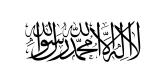

Afghanistan

To know:
Capital : Kaboul
Population (2018) : 39 millions
Form of the State: Unitary and dictatorial Islamic theocracy
Commander of the Faithful :Haibatullah Akhundzada
Ministre: Abdul Ghani Baradar
Official languages: Pachto and Dari
Cash : Afghani
Geography
Afghanistan, in long form de facto the Islamic Emirate of Afghanistan, is a landlocked country in South Asiab or Central Asia surrounded by Uzbekistan to the north, China and Tajikistan to the northeast, Pakistan to the east-southeast, Iran to the west, and Turkmenistan to the northwest.
history of Islamic Emirate of Afghanistan
The Islamic Emirate of Afghanistan is the name of a political regime in Afghanistan. It was founded between 1996 and 1997 by the Taliban, and ended with their fall in 2001. It was reinstated in August 2021, following an offensive that began after the announcement of the withdrawal of US troops from the Afghanistan war.
Taliban are Islamic fundamentalists grouped in a military, political and religious organization called the Islamic Emirate of Afghanistan and then the Islamic Movement of the Taliban, in power between 1996 and 2001 and since 2021. This movement is led by Haibatullah Akhundzada, who was proclaimed Commander of the Faithful of the emirate on May 25, 2016.
The movement, at war with the Islamic State of Afghanistan government, conquered Kabul in 1996 and established the regime of the Islamic Emirate of Afghanistan from 1996-2001 under Mullah Mohammad Omar. However, he never controlled the entire country and was overthrown by the intervention of the North Atlantic Treaty Organization (NATO) in 2001, against which he then waged a guerrilla war
The Taliban were also guilty of human rights violations, particularly with regard to the treatment of women, who were forbidden to work, attend public and university education. Afghan communists were systematically executed and thieves punished by amputation of one of their hands or feet. However, the Taliban managed to eradicate opium production from the country almost completely, although it resumed after the US invasion of the country in 2001.
link with Al-Qaeda
On August 30, 2021, Amin-ul-Haqq, a senior al-Qaeda official, returned to Nangarhar province. Several Taliban and many civilians came to meet him.
According to a UN report published in February 2022, the Taliban's seizure of power strengthened al-Qaeda, which has since enjoyed greater freedom of movement and recruitment. Al-Qaeda's forces are estimated to have between 200 and 400 members. The al-Qaeda leadership has chosen to remain discreet in Afghanistan so as not to hinder the Islamic Emirate of Afghanistan's efforts to gain international recognition